Temple Simulado
Temas de SISIN · 1/1
- 1. Temple Simulado
1.1 Agentes Inteligentes
El tema arranca situando dónde encaja la búsqueda dentro de la Inteligencia Artificial (IA), siguiendo el libro de Russell y Norvig. Después se centra en las estrategias de búsqueda: búsqueda local y heurística y metaheurísticas basadas en trayectorias, en concreto el enfriamiento simulado (la búsqueda tabú aparece en el índice pero no se desarrolla en estas diapositivas).
1.1.1 Cuatro enfoques de la IA
Las definiciones de IA se pueden clasificar según dos preguntas: si se busca que la máquina piense o que actúe, y si el modelo es el ser humano o la racionalidad ideal. De ahí salen cuatro enfoques. Pensar como humanos corresponde al modelado cognitivo; pensar racionalmente, a la lógica y las leyes del pensamiento; actuar como humanos, al test de Turing, que exige capacidades como procesamiento del lenguaje natural (NLP), representación del conocimiento y razonamiento (KRR) y aprendizaje automático (ML); y actuar racionalmente, a los agentes racionales, que es el enfoque que sigue la asignatura.
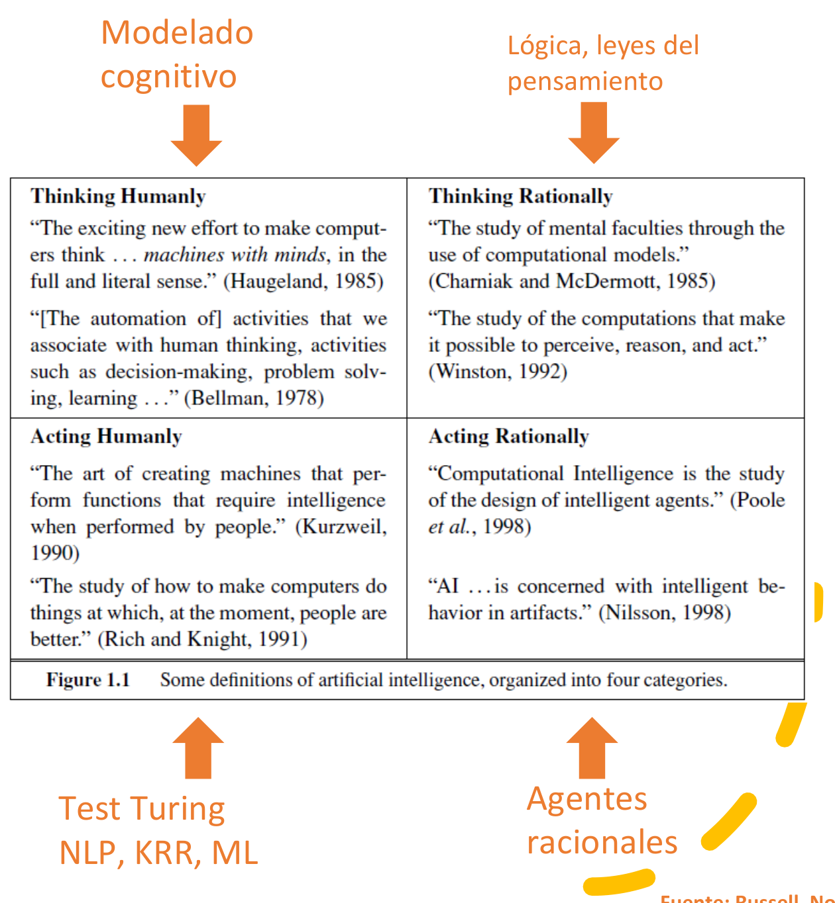
1.1.2 Agentes y racionalidad
Un agente es cualquier cosa que percibe su entorno mediante sensores y actúa sobre él mediante actuadores. Un agente racional es el que actúa para obtener el mejor resultado o, cuando hay incertidumbre, el mejor resultado esperado. Este enfoque aprovecha elementos de los demás (lo que exige el test de Turing, la lógica), pero asume una racionalidad limitada en lugar de perfecta: no siempre se puede calcular la decisión óptima, así que a veces basta con una buena. Un ejemplo es la diferencia entre el razonamiento lógico, exacto, y el razonamiento aproximado.
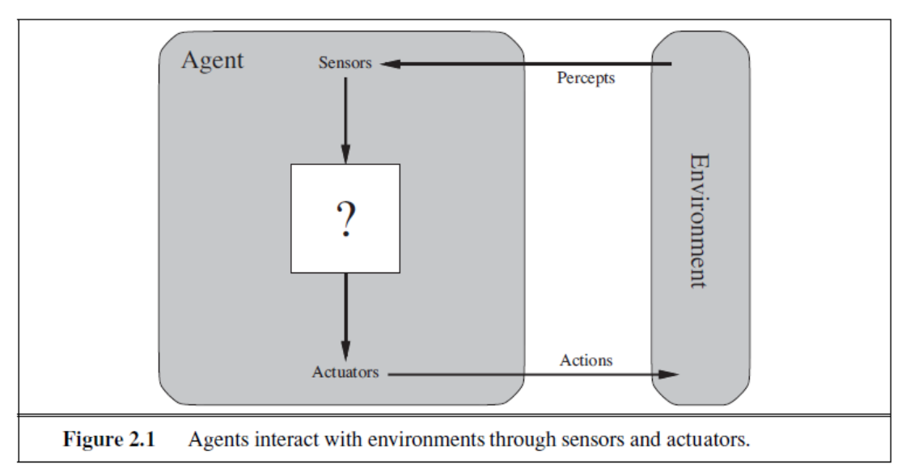
El agente recibe percepciones del entorno a través de los sensores, decide (el "?") y devuelve acciones mediante los actuadores.El ejemplo clásico es el agente aspirador: un mundo con dos casillas, A y B, que pueden estar sucias o limpias. El agente percibe en qué casilla está y si hay suciedad, y su comportamiento se puede describir con una tabla que asocia cada secuencia de percepciones con una acción (si está sucio, aspirar; si no, moverse a la otra casilla).
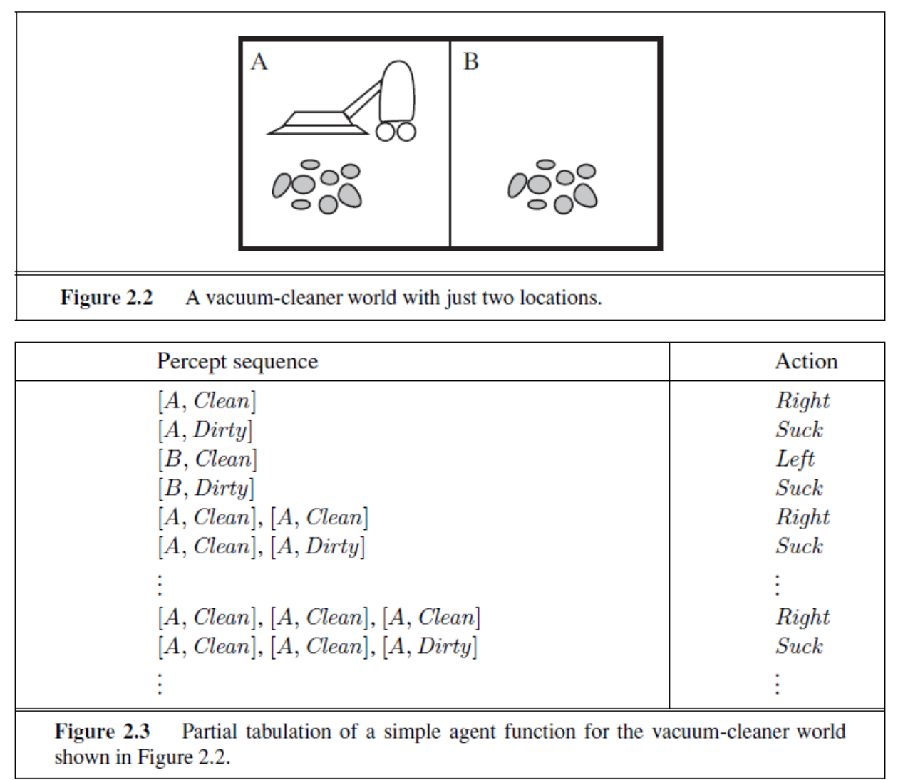
Que un agente sea racional depende de cuatro factores: la medida de rendimiento, que define el criterio de éxito; el conocimiento a priori del entorno; las acciones que puede realizar, y la secuencia de percepciones hasta el momento. Con ellos se define el agente racional:
"Para cada posible secuencia de percepciones, un agente racional debe seleccionar la acción que maximice la medida de rendimiento, teniendo en cuenta las evidencias proporcionadas por la secuencia de percepciones y cualquier conocimiento del que el agente disponga."
1.1.3 Tipos de agentes
La funcionalidad de un agente la implementa su programa agente, que se ejecuta sobre una arquitectura: Agente = arquitectura + programa. Hay distintos diseños, que se diferencian en qué información usan para decidir, en su eficiencia y flexibilidad, y que se eligen según la naturaleza del entorno.
Los agentes reactivos son los más simples: responden de forma directa a la percepción instantánea mediante reglas condición-acción ("si veo esto, hago aquello"), sin memoria.
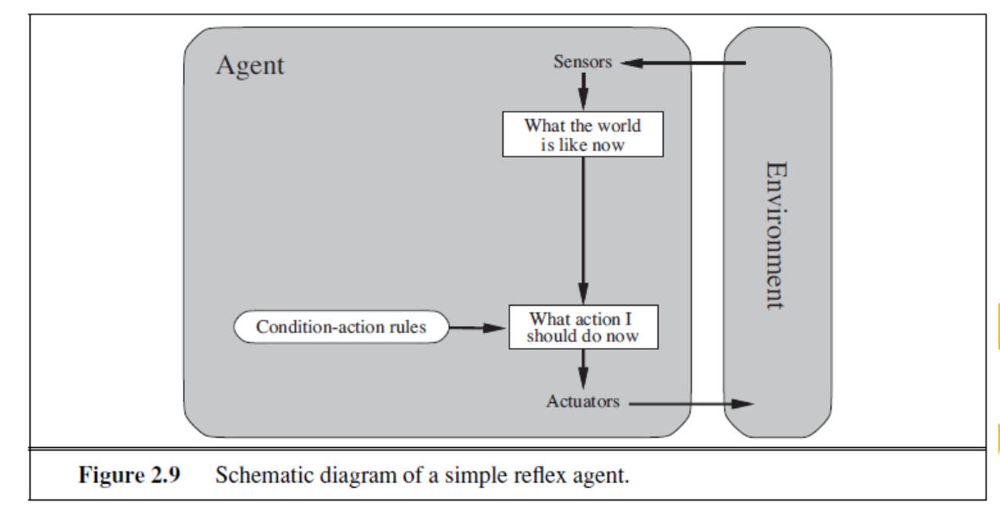
Los agentes reactivos basados en modelos añaden un modelo del entorno: guardan un estado interno que resume lo que no ven en ese instante, sabiendo cómo evoluciona el mundo y qué efecto tienen sus acciones.
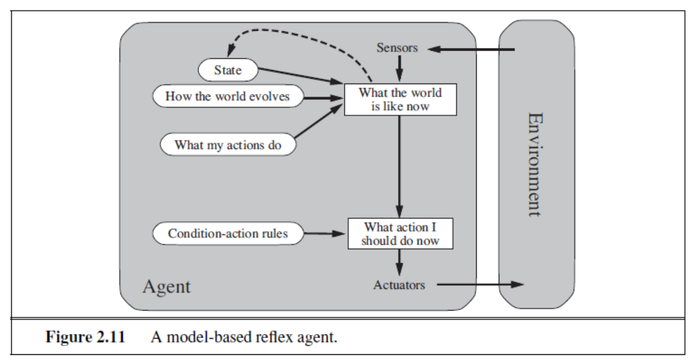
Los agentes basados en objetivos combinan la información actual con un objetivo final: además de saber cómo está el mundo, se preguntan "¿qué pasará si hago la acción A?" y eligen la que les acerque al objetivo.
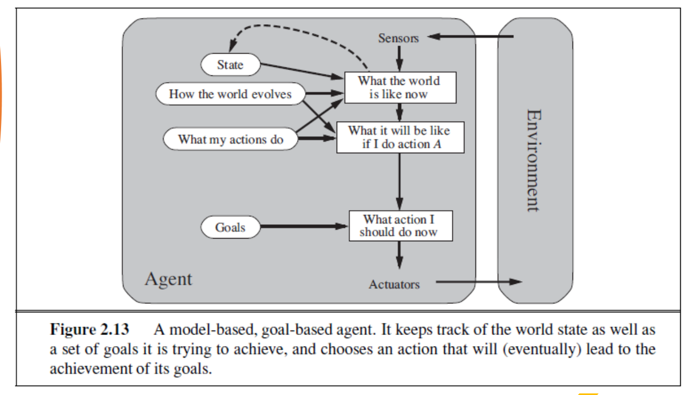
Los agentes de utilidad complementan los objetivos con una función de utilidad que mide "cómo de contento estaré en ese estado". Así pueden elegir entre varias formas de alcanzar un objetivo, o decidir cuando hay incertidumbre, escogiendo la acción con mayor utilidad esperada.
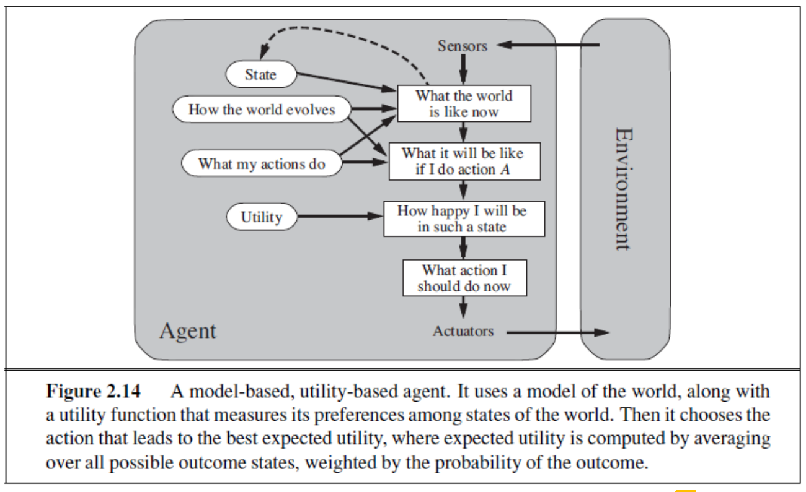
Cualquiera de estos agentes puede mejorar su rendimiento mediante el aprendizaje.
Analogía: cuatro "conductores"
- Reactivo: un termostato. Si hace frío, enciende la calefacción; no recuerda nada ni planifica.
- Reactivo basado en modelos: un conductor que recuerda que hay un coche en su ángulo muerto aunque ahora no lo vea.
- Basado en objetivos: un GPS que busca una ruta que llegue al destino.
- De utilidad: un GPS que, entre todas las rutas que llegan, elige la más rápida, sin peajes o con menos consumo, porque puntúa cada opción.
1.1.4 Agentes para la resolución de problemas
Los agentes que resuelven problemas son agentes basados en objetivos: de planificación, de búsqueda (no informada, informada...), etc. Para aplicarlos hay que formular el problema con estos elementos:
- Una representación del entorno (estados) y un estado inicial E₀.
- Las acciones posibles (fijas).
- El resultado de cada acción (modelo de transiciones).
- Una prueba de finalización que reconozca el estado objetivo E_f.
- Una función de coste.
Una solución es una secuencia de acciones que lleva de E₀ a E_f, y la solución óptima es la de menor coste.
1.2 Búsqueda local
1.2.1 Entornos y óptimos locales
La búsqueda local trabaja sobre el espacio de soluciones S y necesita definir, para cada solución, cuáles son sus "vecinas". Eso lo hace una estructura de entornos, una aplicación
Con esto se define un mínimo local: una solución
El término local se refiere precisamente a que solo se mira el entorno próximo de la solución. A partir de una solución
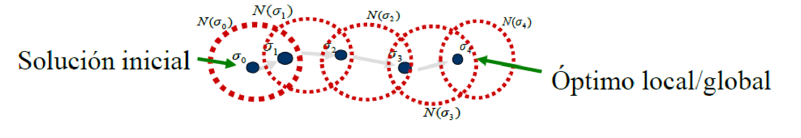
Desde la solución inicial σ₀ se salta a una vecina dentro de su entorno N(σ₀), desde ella a otra de N(σ₁), y así hasta llegar a σ₄, un óptimo local (que puede ser o no el global).Analogía: excursionista en la niebla
Imagina que buscas el punto más bajo de una cordillera en plena niebla: solo ves el suelo a un paso de tus pies. El entorno son los sitios a los que puedes llegar dando un paso, y la búsqueda local consiste en ir dando pasos cuesta abajo. El problema es que, al llegar al fondo de un valle, todos los pasos posibles son cuesta arriba y crees haber terminado, aunque al otro lado de la montaña haya un valle mucho más profundo. Ese valle es un mínimo local; el más profundo de todos, el mínimo global.
Ejemplo que usaremos en todo el tema
Para ver los algoritmos funcionando usaremos un problema de juguete: hay 10 soluciones posibles, numeradas del 1 al 10, cada una con un coste que queremos minimizar. El entorno de una solución son sus dos vecinas (la de la izquierda y la de la derecha).
| Solución |
1 | 2 | 3 | 4 | 5 | 6 | 7 | 8 | 9 | 10 |
|---|---|---|---|---|---|---|---|---|---|---|
| Coste |
9 | 7 | 5 | 8 | 10 | 7 | 4 | 1 | 3 | 6 |
La solución 3 es un mínimo local (sus vecinas cuestan 7 y 8, ambas peores) y la 8 es el mínimo global (coste 1). Entre ambas hay una "montaña" (las soluciones 4 y 5).
1.2.2 Operadores de entornos
Los operadores definen cómo se genera un vecino. Se ilustran con el problema del viajante (TSP), donde una solución es el orden en que se visitan las ciudades (una ruta de 0 a 0 pasando por todas).
La inserción extrae un elemento y lo inserta en otra posición. En el ejemplo, de la ruta 0-1-3-2-7-4-6-5-0 se saca la ciudad 4 y se coloca tras la 1, dando 0-1-4-3-2-7-6-5-0.
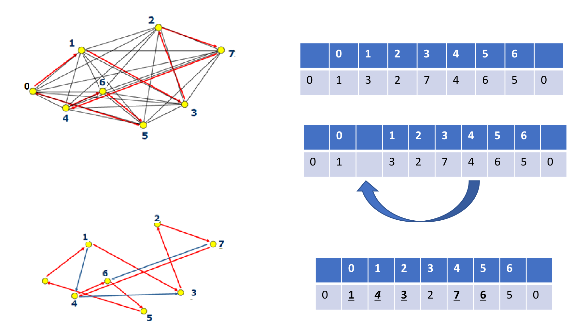
El intercambio escoge dos elementos y los intercambia de posición: intercambiando el 3 y el 4, la ruta pasa a 0-1-4-2-7-3-6-5-0.
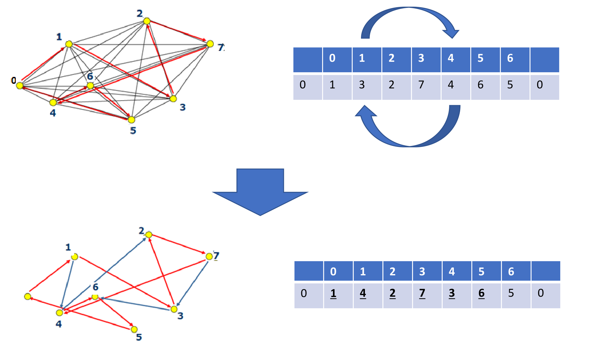
La inversión simple escoge una sublista y le da la vuelta: invirtiendo el tramo 3-2-7-4 se obtiene 0-1-4-7-2-3-6-5-0.
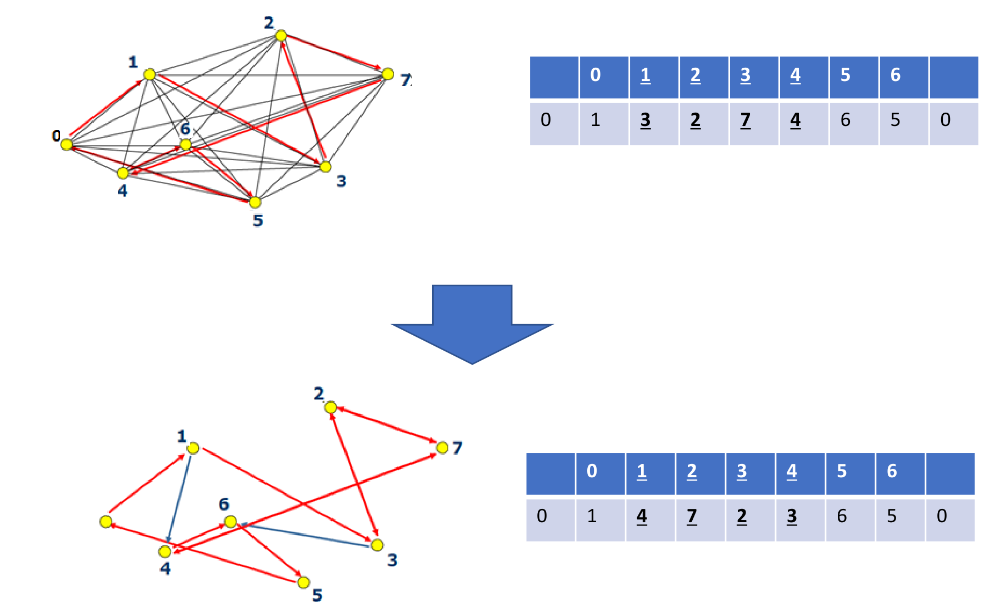
El operador elegido decide cuántos vecinos tiene cada solución y, con ello, cómo se comporta la búsqueda. Un entorno pequeño (pocos vecinos) es barato de explorar en cada paso, pero hay más soluciones que parecen mínimos locales porque "se ve poco". Un entorno grande hace que haya menos óptimos locales en los que quedarse atascado, pero cada paso cuesta más, porque hay que evaluar más vecinos. En nuestro ejemplo de juguete, si el entorno fueran las 4 soluciones más cercanas (dos a cada lado), desde la 3 se "vería" la 5 y la 1, pero todavía no la 7 ni la 8.
1.2.3 Búsqueda local iterativa
El esquema general de búsqueda por entornos parte de una solución inicial y, en cada paso, genera un vecino, decide si acepta moverse a él y guarda la mejor solución vista, hasta cumplir un criterio de parada:
Procedimiento Búsqueda por Entornos
Inicio
GENERA(Solución Inicial)
Solución Actual ← Solución Inicial
Mejor Solución ← Solución Actual
Repetir
Solución Vecina ← GENERA_VECINO(Solución Actual)
Si Acepta(Solución Vecina) entonces Solución Actual ← Solución Vecina
Si Objetivo(Solución Actual) es mejor que Objetivo(Mejor Solución)
entonces Mejor Solución ← Solución Actual
Hasta (Criterio de parada)
DEVOLVER (Mejor Solución)
Fin
La variante más sencilla es la estrategia "el mejor": en cada paso se examinan todos los vecinos, se elige el mejor y solo se avanza si mejora a la solución actual; en cuanto ningún vecino mejora, se para. Es una aproximación voraz y monótona: siempre va a mejor, por lo que se queda atrapada en el primer óptimo local que encuentra.
En el ejemplo, si empezamos en
Procedimiento Búsqueda Local del Mejor
Inicio
GENERA(S_act)
Repetir
Mejor Vecino ← S_act
Repetir para toda S' ∈ E(S_act)
S' ← GENERA_VECINO(S_act)
Si Objetivo(S') mejor que Objetivo(Mejor Vecino) entonces Mejor Vecino ← S'
Fin-Repetir-para
Si Objetivo(Mejor Vecino) mejor que Objetivo(S_act) entonces S_act ← Mejor Vecino
Hasta (Objetivo(Mejor Vecino) peor o igual que Objetivo(S_act))
DEVOLVER(S_act)
Fin
Para entenderlo mejor
Búsqueda local. Subir la Colina — el algoritmo de "subir la colina" y por qué se queda en óptimos locales (vídeo, 5:30).
1.3 Metaheurísticas
1.3.1 De la heurística a la metaheurística
Una heurística resuelve problemas incorporando conocimiento experto de un dominio, es decir, resuelve "inteligentemente" usando ese conocimiento, y ofrece un buen rendimiento tanto en calidad de las soluciones como en recursos empleados. Puede ser específica, diseñada ad hoc para un problema concreto y con el rendimiento más alto, o general, basada en estrategias generales que son más sencillas, adaptables y robustas.
Las metaheurísticas van "más allá" de la heurística: son abstracciones o técnicas generales que producen soluciones factibles o subóptimas. Su definición clásica es de Glover (1986): estrategias inteligentes para diseñar o mejorar procedimientos heurísticos generales con un alto rendimiento.
1.3.2 Problemas de optimización
Optimizar es buscar soluciones factibles y, entre ellas, la óptima según uno o varios criterios u objetivos. Formalmente, un problema de optimización consiste en encontrar, dentro del conjunto
y una solución óptima
Ejemplos reales son el camino más corto entre varios puntos, el plan de reparto de mercancías de mínimo coste, la asignación óptima de trabajadores a tareas, la secuencia óptima de trabajos en una cadena de producción, la distribución de tripulaciones de aviones con mínimo coste o el mejor enrutamiento de paquetes en Internet. El ejemplo clásico es el TSP (problema del viajante): encontrar la ruta más corta que visite todas las ciudades una vez y vuelva al origen.
Estos problemas suelen consistir en agrupar, ordenar o asignar un conjunto discreto de objetos que cumplan ciertas restricciones, aparecen en muchísimas áreas y tienen una gran complejidad computacional (son NP-duros). Por eso los algoritmos exactos (programación dinámica, backtracking...) son ineficientes o directamente imposibles de aplicar, y en la práctica se usan algoritmos aproximados que dan buenas soluciones, no necesariamente la óptima, en un tiempo razonable.
1.3.3 Algoritmos aproximados
Los algoritmos aproximados dan soluciones cercanas a la óptima en problemas NP-duros en un tiempo razonable. Interesan cuando no hay un método exacto, o cuando el que hay necesita demasiado tiempo y memoria, y cuando no hace falta la solución óptima porque basta con una de buena calidad en un tiempo aceptable.
1.3.4 Qué son y cómo se clasifican
Las metaheurísticas son una familia de algoritmos aproximados de propósito general. Suelen ser procedimientos iterativos que guían una heurística subordinada de búsqueda, combinando de forma inteligente distintos conceptos para explorar y explotar adecuadamente el espacio de búsqueda.
| Ventajas | Inconvenientes |
|---|---|
| Algoritmos de propósito general | Son aproximados, no exactos |
| Gran éxito en la práctica | Son no deterministas (probabilísticos): dos ejecuciones pueden dar resultados distintos |
| Fáciles de implementar y paralelizar | No siempre tienen una base teórica establecida |
Se pueden caracterizar por su naturaleza: si siguen una trayectoria (una sola solución que va cambiando) o trabajan con poblaciones de soluciones, si usan memoria, y en qué se inspiran (biología, comportamiento animal, física). El tema se centra en las metaheurísticas de búsqueda o trayectorias, que recorren el espacio de soluciones transformando iterativamente una solución de partida (es decir, hacen búsqueda local). Ejemplos: el Enfriamiento Simulado (SA) y la Búsqueda Tabú (TS).
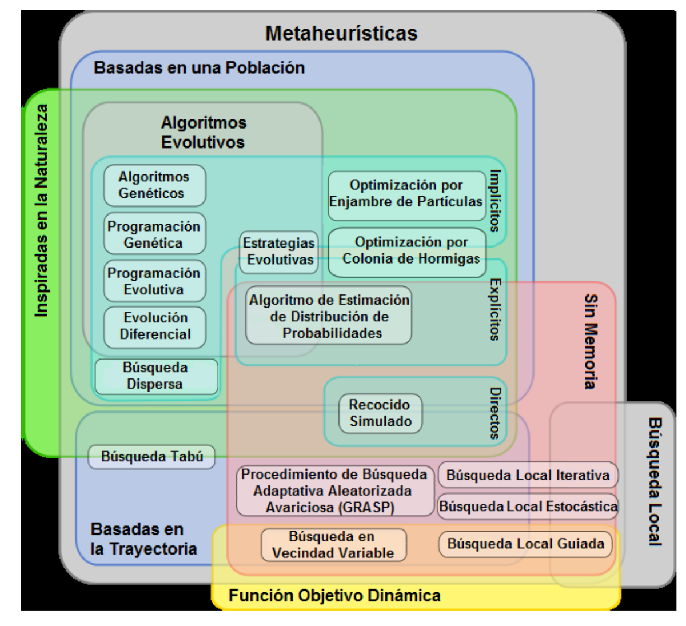
Clasificación (Wikipedia): basadas en población (algoritmos evolutivos, enjambre de partículas, colonia de hormigas...) frente a basadas en trayectoria (búsqueda tabú, GRASP, búsqueda en vecindad variable...), inspiradas o no en la naturaleza, con o sin memoria. El recocido simulado está inspirado en la naturaleza y no usa memoria.Para entenderlo mejor
Metaheurística (Wikipedia) — definición, clasificación y fuente de la figura anterior (artículo; enlazado en las diapositivas). Metaheurísticas — Fernando Sancho (Univ. de Sevilla) — introducción clara a búsqueda local y metaheurísticas (artículo; referencia complementaria del PDF).
1.3.5 Intensificación y diversificación
El funcionamiento de una metaheurística es un equilibrio entre dos fuerzas opuestas. La intensificación es el esfuerzo dedicado a buscar en la región actual (explotación del espacio), y la diversificación, el esfuerzo dedicado a buscar en regiones lejanas (exploración). Hace falta equilibrarlas para identificar rápido las regiones con soluciones de buena calidad sin perder tiempo en regiones poco prometedoras o ya exploradas.
Analogía: buscar dónde cenar en una ciudad nueva
Diversificar es recorrer barrios distintos para descubrir dónde están los buenos restaurantes; intensificar es, una vez encontrada una calle prometedora, probar los locales de esa calle. Si solo diversificas, pasas la noche caminando sin cenar; si solo intensificas, te quedas en la primera calle aceptable aunque la mejor zona esté a dos manzanas. Lo sensato es explorar mucho al principio y centrarse al final, que es exactamente lo que hace el temple simulado.
1.4 Temple Simulado (SA)
1.4.1 Idea
El enfriamiento, temple o recocido simulado (Simulated Annealing, SA) es un algoritmo de búsqueda por entornos con un criterio probabilístico de aceptación de soluciones inspirado en la termodinámica. Lo popularizaron Kirkpatrick, Gelatt y Vecchi en Optimization by Simulated Annealing (Science, 1983).
Su idea central es evitar que la búsqueda local se quede atrapada en óptimos locales permitiendo movimientos hacia soluciones peores. Pero si la búsqueda está progresando hacia una buena solución, esos movimientos "de escape" tienen que estar controlados. El SA lo consigue con una función de probabilidad que hace que aceptar soluciones peores sea cada vez menos probable a medida que avanza la búsqueda. Es la filosofía habitual: diversificar al principio e intensificar al final.
Analogía 1: el herrero
Para que el metal quede fuerte y sin defectos, el herrero lo calienta y lo enfría despacio. Con el metal caliente, los átomos se mueven mucho y pueden recolocarse libremente; al ir enfriando, se mueven cada vez menos hasta quedar fijos en una estructura ordenada, de energía mínima. Si lo enfría de golpe (lo mete en agua fría), los átomos se quedan "congelados" en una estructura desordenada: un mínimo local.
Analogía 2: la canica en una bandeja con hoyos
Pon una canica en una bandeja llena de hoyos de distinta profundidad y quieres que acabe en el más hondo. Si solo la dejas rodar, se queda en el primer hoyo (búsqueda local). Si agitas la bandeja con fuerza al principio, la canica salta de hoyo en hoyo; si luego agitas cada vez más suave, llega un momento en que ya no puede salir de los hoyos profundos, pero sí de los poco profundos. Al final, con poca agitación, se queda en uno de los más hondos. La fuerza de la agitación es la temperatura.
Para entenderlo mejor
Recocido simulado (3 de 8). Recocido Simulado — cómo se traslada la idea del recocido a la optimización (vídeo, 7 min; José Manuel Galán, serie de 8 vídeos).
1.4.2 Origen termodinámico
N. Metropolis (1953) modeló el enfriamiento de un material simulando los cambios de energía de un sistema de partículas al bajar la temperatura, hasta que converge a un estado estable (congelado). Según la termodinámica, a una temperatura
donde
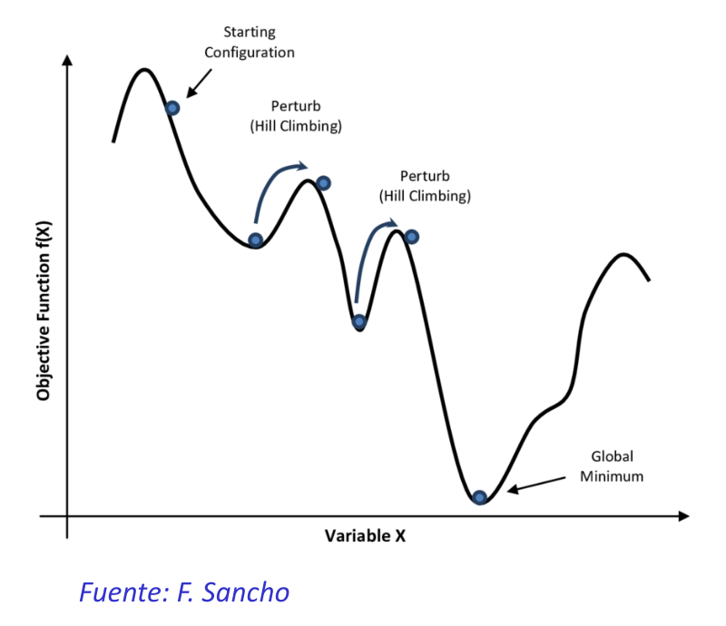
Una búsqueda que solo baja (hill climbing) se queda en el primer valle que encuentra; aceptar de vez en cuando "subidas" permite saltar a otros valles y llegar al mínimo global.La analogía entre ambos mundos es directa:
| Simulación termodinámica | Optimización combinatoria |
|---|---|
| Estados del sistema | Soluciones factibles |
| Energía | Coste |
| Cambio de estado | Solución en el entorno |
| Temperatura | Parámetro de control |
| Estado congelado | Solución heurística |
El algoritmo usa por tanto una variable temperatura T que determina cuánto se aceptan soluciones vecinas peores. Empieza en un valor alto, la temperatura inicial T₀, y se va reduciendo en cada iteración mediante un mecanismo de enfriamiento α hasta llegar a una temperatura final T_f.
1.4.3 Criterio de aceptación
En cada iteración se generan L(T) soluciones candidatas, un número que puede ser fijo en toda la ejecución (incluso 1) o depender de la iteración. A cada candidata se le aplica el criterio de aceptación: si es mejor que la actual, se acepta automáticamente, como en la búsqueda local clásica; si es peor, se acepta con cierta probabilidad, y eso es lo que permite salir de los óptimos locales en los que la búsqueda clásica se quedaría atascada.
Esa probabilidad depende de la diferencia de costes
Si
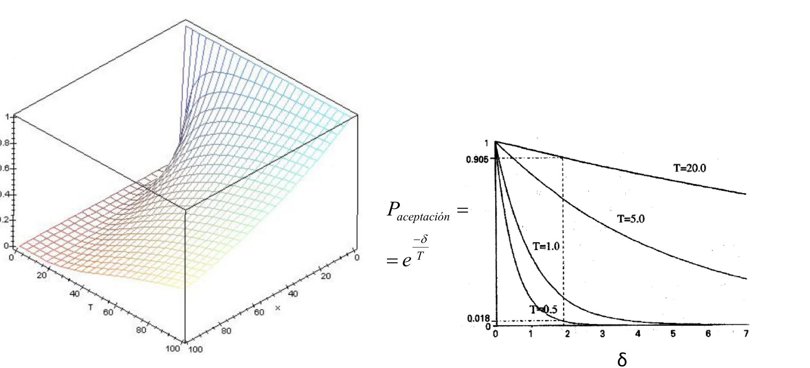
Izquierda: superficie dePor ejemplo, para una diferencia fija
La tabla siguiente muestra el efecto combinado de las dos variables. Cada casilla es la probabilidad de aceptar una solución peor, según cuánto peor sea (
| 0,95 | 0,78 | 0,61 | |
| 0,82 | 0,37 | 0,14 | |
| 0,37 | 0,007 | 0,00005 |
Leyendo por filas: a igual temperatura, cuanto peor es la solución, menos se acepta. Leyendo por columnas: al enfriar, todo se acepta menos, y lo que antes era casi seguro (0,61 para un empeoramiento de 10) pasa a ser prácticamente imposible. Un truco útil: cuando
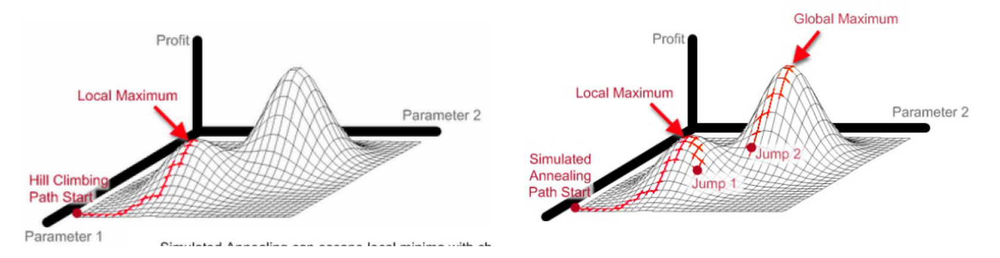
Maximizando: el hill climbing (izquierda) sube hasta el máximo local más cercano y se para; el recocido simulado (derecha) da "saltos" que le permiten pasar al máximo global.1.4.4 El algoritmo básico
Cada iteración genera
INPUT (T0, α, L, Tf)
T ← T0
S_act ← Genera_solucion_inicial
WHILE T ≥ Tf DO
FOR cont ← 1 TO L(T) DO
S_cand ← Selecciona_solucion_N(S_act)
δ ← coste(S_cand) − coste(S_act)
IF (U(0,1) < e^(−δ/T)) OR (δ < 0) THEN S_act ← S_cand
END
T ← α(T)
END
{Escribe como solución la mejor de las S_act visitadas}
Las variables del algoritmo
| Variable | Qué es | En la analogía de la bandeja |
|---|---|---|
| Temperatura actual: cuánto se toleran las soluciones peores | Fuerza con la que agitas ahora | |
| Temperatura inicial (alta) | Agitación del principio | |
| Temperatura final: cuando |
Agitación mínima a partir de la cual paras | |
| Mecanismo de enfriamiento: cómo baja |
Lo rápido que suavizas la agitación | |
| Nº de vecinos que se prueban a cada temperatura | Cuánto rato agitas antes de suavizar | |
| Solución actual | Hoyo en el que está la canica | |
| Candidata: vecina elegida al azar de |
Hoyo al que podría saltar | |
| Si el nuevo hoyo es más hondo (δ < 0) o menos (δ > 0) | ||
| Número aleatorio entre 0 y 1: "tirar el dado" | El azar de cada sacudida |
Un detalle importante: el algoritmo devuelve la mejor solución visitada, no la última, porque al aceptar soluciones peores puede terminar en una peor que otra que ya pasó.
Ejemplo paso a paso
Aplicamos el algoritmo al ejemplo de juguete, empezando en el mínimo local
| Actual → candidata | ¿Se acepta? | ||||
|---|---|---|---|---|---|
| 10 | 3 (5) → 4 (8) | +3 | 0,741 | 0,52 | Sí: 0,52 < 0,741, sube la "montaña" |
| 10 | 4 (8) → 5 (10) | +2 | 0,819 | 0,33 | Sí: llega a la cima |
| 5 | 5 (10) → 6 (7) | −3 | — | — | Sí: mejora |
| 5 | 6 (7) → 7 (4) | −3 | — | — | Sí: mejora |
| 2,5 | 7 (4) → 8 (1) | −3 | — | — | Sí: llega al óptimo global |
| 2,5 | 8 (1) → 9 (3) | +2 | 0,449 | 0,60 | No |
| 1,25 | 8 (1) → 7 (4) | +3 | 0,091 | 0,65 | No |
| 1,25 | 8 (1) → 9 (3) | +2 | 0,202 | 0,40 | No |
Tras enfriar a
¿Y si eligiéramos mal
Las diapositivas muestran también las versiones de Palma y Marín (igual que la anterior, con schedule(t) para fijar la temperatura en cada paso, termina cuando
Para entenderlo mejor
Simulated Annealing Visualization: Solving Travelling Salesman Problem — el SA resolviendo un TSP: se ve cómo la ruta cambia mucho al principio y se estabiliza al enfriarse (vídeo, 3 min, inglés).
1.5 Diseño del algoritmo SA
Para aplicar el SA a un problema concreto hay que decidir varias cosas, que el pseudocódigo señala: la representación de las soluciones, la inicialización (temperatura y solución inicial), la transición entre soluciones y la secuencia de enfriamiento.
1.5.1 Representación, inicialización y transiciones
La representación depende del problema: un vector ordenado de enteros para el TSP (representación de orden), un vector binario {0, 1} para la mochila (cada objeto entra o no), o un vector de reales para optimización continua. La inicialización, tanto de la temperatura inicial como de la solución inicial, conviene hacerla con técnicas eficientes y conocimiento del problema.
Dentro del bucle, la transición de soluciones tiene tres pasos: generar una nueva solución del entorno (
La secuencia de enfriamiento la definen cuatro parámetros: el valor inicial de la temperatura (
1.5.2 Temperatura inicial T₀
No conviene usar un valor fijo independiente del problema: si es muy baja, no se alcanza el óptimo (el algoritmo apenas explora) y si es muy alta, tarda mucho en converger. La idea es que al principio se acepte casi cualquier transición, lo que se puede ajustar experimentalmente o de forma proporcional al tamaño del problema o del espacio de soluciones. En general se busca que
Una forma práctica es calcularla a partir de la probabilidad φ de aceptar una solución un μ peor que la inicial
Deducción de la fórmula
En el algoritmo, una candidata peor (
Si
En la diapositiva se habla de una solución "un μ% peor", pero en la deducción μ es un **tanto por uno** (μ = 5 significa un 500% peor).
Ejemplo
Con
Con esa
| Coste de la candidata |
Probabilidad de aceptarla | |
|---|---|---|
| 100 | 0 | 1 |
| 600 | 500 | 0,9900 |
| 5.000 | 4.900 | 0,9062 |
| 50.000 | 49.900 | 0,3668 |
También se puede hacer al revés, calculando qué coste tendría una solución aceptada con una probabilidad dada:
| Probabilidad |
Coste de la solución |
|---|---|
| 0,2 | 80.169 |
| 0,1 | 114.652 |
| 0,05 | 149.136 |
| 0,001 | 343.758 |
Es decir, al principio el algoritmo acepta incluso soluciones miles de veces peores, aunque con poca probabilidad: justo la libertad inicial que se buscaba.
Cómo influyen μ y φ
La fórmula se entiende mejor si se lee como una frase: "quiero que, al principio, una solución un μ peor que la inicial se acepte con probabilidad φ". Subir cualquiera de los dos pide más libertad inicial y, por tanto, una
| μ (empeoramiento) | φ (probabilidad de aceptarlo) | |
|---|---|---|
| 0,1 (un 10% peor) | 0,5 | 14,43 |
| 1 (el doble de caro) | 0,5 | 144,27 |
| 0,1 | 0,9 | 94,91 |
| 0,1 | 0,99 | 994,99 |
Al multiplicar μ por 10,
1.5.3 Mecanismo de enfriamiento
El mecanismo de enfriamiento decide cómo baja la temperatura entre iteraciones. Hay varias opciones:
| Esquema | Fórmula |
|---|---|
| Temperaturas descendentes fijadas por el usuario | — |
| Descenso constante | — |
| Descenso proporcional | |
| Criterio de Boltzmann | |
| Esquema de Cauchy | |
| Cauchy modificado |
En todos,
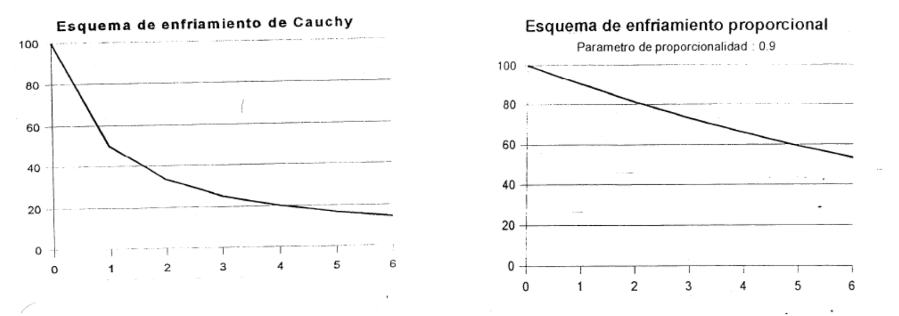
El esquema de Cauchy (izquierda) baja la temperatura muy rápido al principio y luego despacio; el proporcional con α = 0,9 (derecha) la baja de forma mucho más suave.Para comparar los esquemas, esta tabla muestra la temperatura tras
| Esquema | |||
|---|---|---|---|
| Cauchy, |
50 | 9,09 | 0,99 |
| Boltzmann, |
100 | 30,28 | 17,84 |
| Proporcional, α = 0,9 | 90 | 34,87 | 0,0027 |
Boltzmann enfría lentísimo: tras 100 iteraciones sigue a 17,84, así que explora mucho pero converge muy despacio. Cauchy baja muy rápido al principio. El proporcional baja de forma suave al principio y termina muy frío.
En el descenso proporcional, el valor de α decide la duración de la búsqueda. Para ir de
| α | Nº de enfriamientos | Comportamiento |
|---|---|---|
| 0,8 | 21 | Enfriamiento brusco: rápido, pero riesgo de quedarse en un mínimo local ("templar en agua fría") |
| 0,95 | 90 | Término medio |
| 0,99 | 459 | Enfriamiento muy lento: más probabilidad de encontrar el óptimo, pero mucho más tiempo |
El Cauchy modificado tiene un truco: tomando inversos, la fórmula queda
1.5.4 Velocidad de enfriamiento L(T)
Analogía: dejar reposar el metal
Esta variante adapta
1.5.5 Condición de parada
En teoría el algoritmo terminaría cuando
Una buena opción es parar cuando no se ha aceptado ningún vecino de los
1.5.6 Resumen: ¿qué pasa si cambio cada parámetro?
| Parámetro | Si es demasiado bajo / pequeño | Si es demasiado alto / grande |
|---|---|---|
| Casi no acepta empeoramientos: se comporta como búsqueda local y se atasca en el primer óptimo local | Acepta casi todo: al principio es un paseo aleatorio y gasta iteraciones inútiles | |
| α (proporcional) | Enfría de golpe (0,8 → 21 pasos de 100 a 1): rápido pero con más riesgo de óptimo local | Enfría muy despacio (0,99 → 459 pasos): mejores soluciones pero mucho más tiempo |
| No da tiempo a explorar cada temperatura: equivale a enfriar demasiado rápido | Cada temperatura se alarga sin mejorar: tiempo perdido | |
| Sigue iterando cuando ya no acepta nada (tiempo perdido) | Para antes de terminar de afinar la solución | |
| μ, φ | ||
| Tamaño del entorno | Pasos baratos pero más óptimos locales | Menos óptimos locales pero cada paso es más caro |
Para entenderlo mejor
Algorítmica, Tema 3: Enfriamiento Simulado (F. Herrera, UGR) — apuntes con el diseño del SA, esquemas de enfriamiento y ejemplos (PDF; referencia básica del tema). Recocido simulado (4 de 8). Algoritmo Básico I — el algoritmo paso a paso con sus parámetros (vídeo, 7 min; José Manuel Galán).
1.6 Ideas clave
- Agente: percibe con sensores y actúa con actuadores. Racional: maximiza la medida de rendimiento según percepciones y conocimiento. Agente = arquitectura + programa.
- Tipos: reactivo, reactivo basado en modelos, basado en objetivos, de utilidad; todos pueden aprender. Resolver un problema: estados, E₀, acciones, modelo de transiciones, estado objetivo, coste; solución = secuencia E₀ → E_f, óptima = menor coste.
- Búsqueda local: estructura de entornos
; mínimo local si ningún vecino es mejor. Operadores: inserción, intercambio, inversión. La estrategia "el mejor" es voraz y monótona y se queda en el primer óptimo local. - Metaheurísticas (Glover, 1986): algoritmos aproximados de propósito general para problemas NP-duros; no deterministas; trayectoria vs población. Equilibrio intensificación (explotación) / diversificación (exploración).
- SA: acepta siempre soluciones mejores y las peores con
, . Mayor T o menor δ → más aceptación. Diversifica al principio, intensifica al final. Inspirado en Metropolis (1953) y Kirkpatrick et al. (1983). - Diseño: representación,
, mecanismo de enfriamiento α, velocidad y condición de parada. (μ en tanto por uno). Enfriamiento proporcional con α ∈ [0,8, 0,99]; Boltzmann, Cauchy y Cauchy modificado ( para M iteraciones). - Enfriar al llegar a máx_vecinos o máx_éxitos (= 0,1·máx_vecinos); parar cuando num_éxitos = 0.
- Regla práctica: la probabilidad de aceptar un empeoramiento δ = T es siempre ≈ 0,37.
baja → búsqueda local; alta → paseo aleatorio. α cerca de 1 → más lento y mejor.